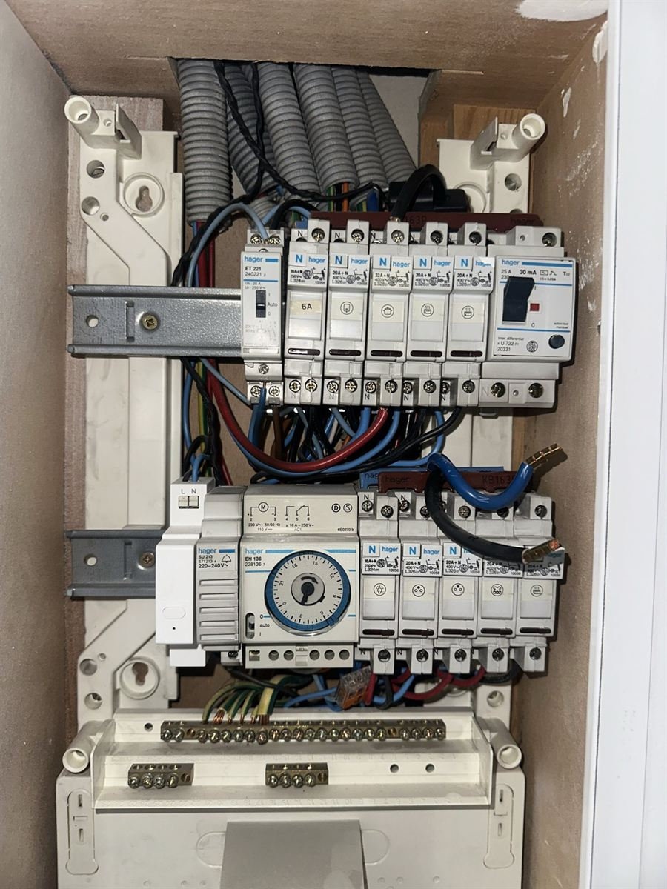
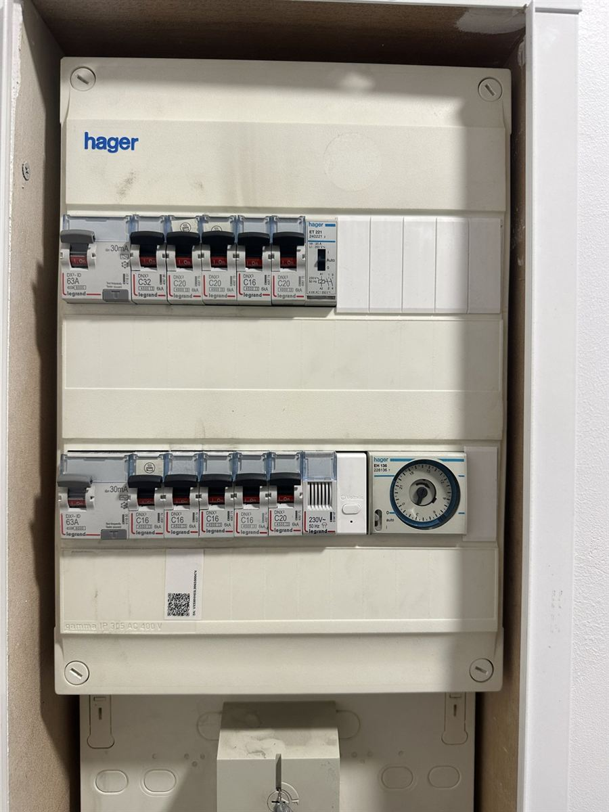

Sur Internet, les fourchettes annoncées pour changer un tableau électrique vont de 400 € à plus de 3 000 €. Difficile de s'y retrouver. Chez SINELEC, le prix dépend d'abord d'une chose : la taille du tableau, en nombre de rangées. Voici nos prix réels, ce qu'ils comprennent, et des tableaux que nous avons posés en Île-de-France.
En bref
- Remplacement complet : à partir de 1 200 € TTC (1 rangée) à 2 600 € TTC (4 rangées), fourniture et pose comprises, selon le nombre de rangées.
- Mise aux normes d'un mini tableau : 240 € TTC, quand le tableau n'a pas besoin d'être changé.
- Déplacement en plus : 65 € à 90 € TTC selon le département. Prix fixe, annoncé avant les travaux.
Nos prix selon la taille du tableau
Un tableau électrique se compte en rangées, et chaque rangée en modules (la largeur d'un disjoncteur). Plus votre logement a de circuits, plus il faut de place. Tous les prix sont en euros TTC, TVA non applicable (article 293 B du CGI).
| Taille du tableau | Logement type | Prix posé, à partir de |
|---|---|---|
| 1 rangée6 à 13 modules | Studio, petit 2 pièces | dès 1 200 € |
| 2 rangées14 à 26 modules | 2 à 3 pièces | dès 1 600 € |
| 3 rangées27 à 39 modules | Appartement familial, maison | dès 2 200 € |
| 4 rangées40 à 52 modules | Grande maison, nombreux circuits | dès 2 600 € |
Le logement type est une indication : c'est le nombre de circuits qui décide. Nous comptons vos circuits sur photo ou sur place, et le prix est confirmé avant les travaux.
Ce qui peut changer le prix
- Des circuits à créer : une ligne dédiée pour une plaque de cuisson, un four ou une borne de recharge.
- Un câblage abîmé derrière le tableau : fils trop courts, gaines fondues, conducteurs oxydés à reprendre.
- L'absence de terre ou une liaison à refaire.
- Le déplacement, selon votre département (65 € à 90 € TTC).
Tout est chiffré avant les travaux : le prix annoncé est le prix payé.
Ce qui est compris dans le prix
- La dépose de l'ancien tableau.
- Le nouveau coffret, avec ses interrupteurs différentiels 30 mA et ses disjoncteurs adaptés à chaque circuit.
- La reprise et le repérage de tous les circuits, avec une étiquette par disjoncteur.
- Le schéma du tableau et les tests de fonctionnement.
Non compris : la création de nouveaux circuits (par exemple une ligne dédiée pour une plaque de cuisson ou une borne de recharge). Ils sont chiffrés à part et validés avec vous avant.
Changer le tableau ou seulement le mettre aux normes ?
Tous les tableaux n'ont pas besoin d'être remplacés. Un petit tableau récent, en bon état, peut être remis en conformité pour 240 € TTC : voir notre mise aux normes d'un mini tableau. Le remplacement complet devient nécessaire quand le tableau présente :
- des fusibles à cartouche en porcelaine, ou un montage sur panneau en bois ;
- un différentiel de 500 ou 650 mA au lieu de 30 mA, ou aucun différentiel ;
- des traces de chaleur : plastique noirci, borne fondue, odeur de brûlé ;
- plus assez de place pour vos circuits.
Les signes en détail sont dans notre guide tableau électrique ancien : quand le changer.
Exemples de tableaux que nous avons posés
- 2 rangées à Orsay (91) : un tableau ouvert remplacé par un coffret Hager avec deux différentiels 63 A 30 mA et dix disjoncteurs. Voir le chantier.
- 2 rangées à Bezons (95) : un tableau sur panneau en bois à fusibles en porcelaine remplacé par un coffret Schneider Electric à deux différentiels. Voir le chantier.
- 3 rangées à Guyancourt (78) : un tableau d'origine avec un différentiel de 500 mA remplacé par un coffret Legrand, un différentiel 30 mA par rangée. Voir le chantier.
- 3 rangées à Bondy (93) : après un départ de feu au tableau, un coffret Legrand neuf avec trois différentiels 30 mA et des disjoncteurs calibrés par usage. Voir le chantier.


Comment se passe un remplacement ?
- Vous nous envoyez une photo du tableau ouvert, ou nous passons le voir : nous comptons les circuits.
- Nous annonçons le prix fixe : taille du tableau, déplacement, et nouveaux circuits s'il en faut.
- Le jour J, le courant est coupé le temps des travaux. Nous reprenons chaque circuit, le repérons et testons tout avant de remettre le courant.
- Vous recevez la facture et le schéma du tableau.
Questions fréquentes
Quel est le prix pour changer un tableau électrique ?
Chez SINELEC, le remplacement complet d'un tableau électrique démarre à partir de 1 200 € TTC pour 1 rangée et à partir de 2 600 € TTC pour 4 rangées, fourniture et pose comprises. Le prix dépend de la taille du tableau et de l'état de l'installation ; il est fixe et annoncé avant les travaux. Le déplacement s'ajoute selon le département (65 € à 90 € TTC).
Qu'est-ce qui est compris dans le prix ?
La dépose de l'ancien tableau, le nouveau coffret avec ses interrupteurs différentiels 30 mA et ses disjoncteurs, la reprise et le repérage de tous les circuits, le schéma et les tests. La création de nouveaux circuits n'est pas comprise : elle est chiffrée et validée avec vous avant.
Faut-il changer tout le tableau ou seulement le mettre aux normes ?
Si le tableau est petit et en bon état, une mise aux normes peut suffire : 240 € TTC pour un mini tableau. Le remplacement complet s'impose avec des fusibles en porcelaine, un différentiel de 500 ou 650 mA au lieu de 30 mA, des traces de chaleur ou un coffret trop petit pour vos circuits.
Combien de rangées faut-il pour mon logement ?
Cela dépend du nombre de circuits : chaque disjoncteur prend un module, chaque interrupteur différentiel en prend plusieurs, et la norme NF C 15-100 demande de garder au moins 20 % de place libre. En général, une rangée suffit pour un studio, deux ou trois pour un appartement familial, quatre pour une grande maison.